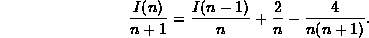
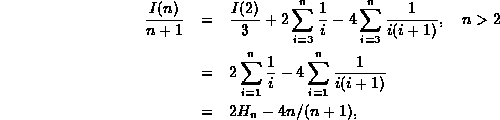
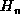
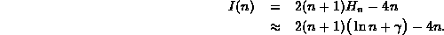
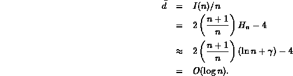

Data Structures and Algorithms
with Object-Oriented Design Patterns in C++
Data Structures and Algorithms
with Object-Oriented Design Patterns in C++
This section presents a technique for solving recurrence relations
such as Equation  called telescoping .
The basic idea is this:
We rewrite the recurrence formula so that a similar functional
form appears on both sides of the equal sign.
E.g., in this case, we consider n>2 and divide
both sides of Equation by n+1 to get
called telescoping .
The basic idea is this:
We rewrite the recurrence formula so that a similar functional
form appears on both sides of the equal sign.
E.g., in this case, we consider n>2 and divide
both sides of Equation by n+1 to get

Since this equation is valid for any n>2, we can write the following series of equations:
Each subsequent equation in this series is obtained by substituting n-1 for n in the preceding equation. In principle, we repeat this substitution until we get an expression on the right-hand-side involving the base case. In this example, we stop at n-k-1=2.
Because Equation has a similar functional form on both
sides of the equal sign,
when we add Equation through Equation together,
most of the terms cancel leaving

where  is the  harmonic number .
In Section it is shown that
harmonic number .
In Section it is shown that
 ,
where
,
where  is called Euler's constant .
Thus, we get that the average internal path length of the average
binary search tree with n internal nodes is
is called Euler's constant .
Thus, we get that the average internal path length of the average
binary search tree with n internal nodes is

Finally, we get to the point: The average depth of a node in the average binary search tree with n nodes is

 Copyright © 1997 by Bruno R. Preiss, P.Eng. All rights reserved.
Copyright © 1997 by Bruno R. Preiss, P.Eng. All rights reserved.